Обзор
В этом уроке мы рассмотрим процесс создания цикла день-ночь, используя Environment Editor внутри CRYENGINE, который послужит хорошей основой для большинства сценариев освещения, подобных земным. Это будет охватывать настройку нескольких разных времен суток, а также переходов между ними, сохраняя при этом границы физически точного освещения. 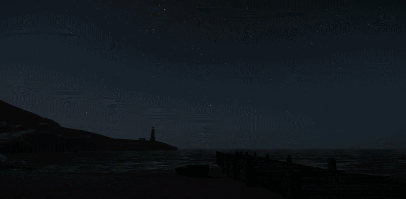
Рис. 1: Замедленная съемка полного цикла день-ночь, достигнутая в CRYENGINE.
Прежде чем мы углубимся в детали, имейте в виду, что все параметры в Environment Editor влияют на окончательный вид вашего уровня, и все они влияют друг на друга. Влияние некоторых из них становится очевидным только при соблюдении определенных условий, поэтому для создания идеального сценария освещения требуется довольно много переходов между различными элементами. Это руководство не представляет собой пошаговый рабочий процесс, оно направлено на то, чтобы дать вам лучшее понимание системы и того, чего вы можете достичь, управляя доступными с ее помощью параметрами.
Полезная информация
Важно отметить, что CRYENGINE использует две разные модели тумана для создания атмосферных эффектов. Для получения высококачественных результатов мы используем объемную модель тумана на основе вокселей, предназначенную для точного взаимодействия со всеми объектами на вашем уровне. Имейте в виду, что это заметно влияет на производительность, поэтому в качестве альтернативы для нижнего уровня мы предоставляем возможность использовать обычный туман. Короче говоря, Volumetric Fog позволяет источникам света, кубическим картам и теням взаимодействовать с глобальной/локальной атмосферой, тогда как обычный туман этого не делает. В этом уроке мы рассмотрим оба этих варианта.
Как упоминалось в начале, важно оставаться в пределах физически точных значений освещенности при настройке любого сценария освещения, чтобы получить максимальную отдачу от нашего конвейера PBS, поэтому в зависимости от результата, которого вы пытаетесь достичь, могут потребоваться некоторые исследования, чтобы определить, какими должны быть ваши значения освещенности. В то же время получение желаемого вида вашей среды всегда является наивысшим приоритетом, поэтому требуется некоторая тонкая настройка, чтобы добиться чего-то, что выглядит хорошо, но при этом соответствует реальным ценностям.
Чтобы открыть Environment Editor, перейдите по ссылке Меню инструментов -> Environment Editor из списка. Компоновка этого инструмента включает в себя ряд различных элементов. С левой стороны у нас есть список «Предустановки», под ним находятся настройки ориентации/угла Солнца, а рядом с ними находится список настраиваемых параметров. С правой стороны вы можете найти инструменты редактирования кривой, временную шкалу вверху, визуальное представление выбранного свойства в течение 24-часового цикла, а под ним и внизу у нас есть значения времени начала/текущего/окончания, а также элементы управления для воспроизведения цикла.
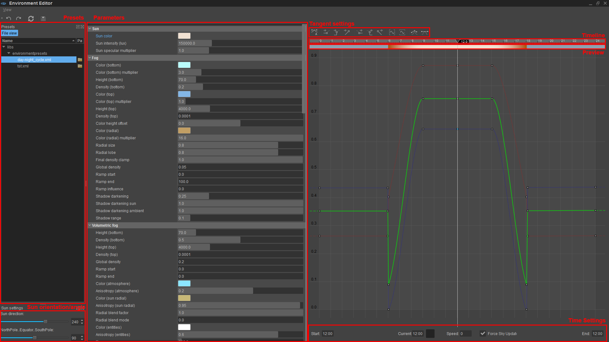
Рис2: Макет Environment Editor
Чтобы изменить время суток, просто перетащите маркер управления (треугольник) на временной шкале в любую сторону. Вы не можете выйти за пределы значений 0 и 1, поскольку они представляют полный 24-часовой цикл.
Environment Editor содержит большое количество расширенных параметров, которые позволят вам полностью настроить освещение на вашем уровне, а также внешний вид неба. Эти параметры разделены на логические группы, каждая из которых управляет различными аспектами вашей среды.
Редактор кривых
Редактор кривых используется для управления переходом между значениями переменных в разное время суток (не константами, которые могут иметь только одно значение для всех времен суток). Изменение значения переменной автоматически создаст для вас ключ в текущий момент. Чтобы просмотреть текущие ключевые кадры для переменной, щелкните имя этой переменной на панели «Переменные». При нажатии на фактическое значение также отобразятся текущие ключевые кадры, но будет создан новый ключевой кадр, если вы не нажмете ESC.
Вы можете увеличить масштаб временной шкалы в верхней части редактора кривых с помощью колеса прокрутки; это также повысит точность отображения текущего времени. Если вы хотите отредактировать значение существующего ключевого кадра, вам необходимо установить текущее время в соответствии с положением ключевого кадра, что вы можете сделать, введя его в поле «Текущее время» (при условии, что вы уже знаете точное время ключевого кадра) или полностью увеличить масштаб ключевого кадра, пока не увидите его точное положение, а затем перетащить линейку времени, чтобы получить текущее время, соответствующее положению ключевого кадра.
Распространенной ошибкой является предположение, что текущее время соответствует временной позиции ключевого кадра, и изменение значения только для того, чтобы обнаружить, что вы создали новый ключевой кадр, очень близкий к существующему. Хорошей практикой для упрощения использования ключевых кадров является согласование политики студии, согласно которой ключевые кадры устанавливаются только в обычное время, например, ровно в час, полчаса или четверть часа.
Настройки динамического времени суток и редактора кривых
Другие значения, установленные в редакторе кривых: Время начала, Текущее время, Конец Времени, и Скорость воспроизведения.
Динамическое время суток означает, что вам нужно будет изменить скорость воспроизведения в редакторе кривых на значение больше 0. Скорость воспроизведения, равная 1, означает, что за каждую секунду реального времени проходит один час игрового времени (т. е. по правилам времени). Поскольку час = 3600 секунд, «реальным временем» будет скорость воспроизведения 0,0002.
Поскольку точность параметра скорости воспроизведения ограничена значением 0,001, значение 0,001 максимально приближено к «реальному времени», которое можно установить с помощью этого интерфейса. (т. е. в 5 раз больше реального времени). Для более медленных скоростей воспроизведения время суток можно изменить с помощью C++, а для большей точности использовать внутренние часы устройства.
Предполагая, что скорость воспроизведения больше 0, текущее время будет прогрессировать от времени начала до времени окончания, затем вернется к времени начала и продолжит цикл. Это дает вам возможность не только создавать полные 24-часовые циклы дня и ночи, но и создавать более плавно меняющиеся условия освещения во время игровой миссии путем циклического переключения между дневными и ночными часами, что приводит к разнообразию освещения и погодных условий в течение дня или части дня вместо освещения static.
Обратите внимание, что в редакторе Sandbox воспроизведение начинается с текущего времени, а чистый игровой режим начинается со времени начала. Конечно, вы также можете установить текущую предустановку среды и изменить ее параметры с помощью визуальных сценариев или кода.
Мы не будем рассматривать все эти параметры, поскольку некоторые из них не требуют каких-либо изменений для общего сценария, подобного земному, который мы здесь создаем. Однако мы рассмотрим разделы, которые мы меняем, чтобы лучше понять, чем они управляют. Мы также пройдем процесс создания плавных переходов при изменении времени суток с помощью редактора кривых.
Начальная настройка
В этом примере наша цель — добиться общего цикла день-ночь на 45° широты.
Мы начнем с щелчка правой кнопкой мыши по левой стороне (в дереве проводника). Добавить -> Создать и сохраните его как day-night_cycle.xml. Чтобы открыть существующий пресет, вам нужно будет выбрать Добавить -> Существующий. Пресеты сохраняются в <YOUR_PROJECT_FOLDER\Assets\libs\environmentpresets.
Далее нам нужно настроить направление Солнца и широту. Эти значения расположены под списком предустановок в левой части редактора. Установите Направление Солнца на 180°, чтобы он поднимался перед камерой. Для широты нам нужно изменить NortPole..Экватор..Южный полюс значение равно 45. Эти два значения не сохраняются в файле настроек среды, поэтому вы можете использовать одну и ту же настройку с разными настройками ориентации и широты.
Первое, что нам нужно сделать, прежде чем мы начнем настраивать наш цикл, это изменить Белая точка кривой пленки до 4 (по умолчанию 1). Его можно найти в группе HDR в Environment Editor. Мы также будем использовать новый улучшенный режим адаптации глаз. Для этого откройте консоль и просто введите r_HDREyeAdaptationMode 1. Эти два значения существенно меняют чувствительность к свету, поэтому их необходимо правильно настроить, прежде чем изменять какие-либо другие параметры.
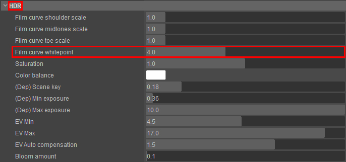
Рис.3: Расположение настройки точки белого для кривой пленки.
Теперь мы готовы начать создавать цикл дня и ночи.
Настройка Солнца
Категория «Солнце» содержит настройки, влияющие на цвет и интенсивность прямого солнечного света.
Цвет Солнца:
Начнем с установки текущего времени на 12:00 и придания ему слегка желтого оттенка (240, 225, 210). В это время будет создан ключ и обновлен предварительный просмотр, чтобы отобразить только что внесенные нами изменения. Выберите вновь созданный ключ и установите касательную входа/выхода на линейную.
Это значение должно оставаться постоянным в течение дня, поэтому мы создадим еще один ключ в 09:00 и назначим ему тот же цвет. Для этого установите In tangent на ноль и Out на линейный. Отразите результат в 15:00.
По мере приближения сумерек/рассвета цвет солнца меняется на насыщенный оранжевый. Чтобы настроить это, измените текущее время на 06:00, назначьте ему соответствующий цвет ( 170, 84, 0 ) и установите обе касательные входа/выхода на ноль. Зеркально отразите этот вновь созданный ключ в 18:00.
На этом этапе стоит отметить, что параметры Солнца также используются для управления цветом/интенсивностью света, исходящего от луны, хотя луна не движется в течение ночи.
Чтобы это настроить, мы создаем ключ в 05:56 и придаем ему синий оттенок (140, 160, 176). Чтобы сохранить это значение на протяжении всей ночи, нам нужны дополнительные ключи с тем же значением в 00:00, 18:04 и 23:59 соответственно. Измените касательные входа/выхода для всех этих ключей на линейные.
Если вы настроили все правильно, ваш предварительный просмотр и кривые должны выглядеть так:
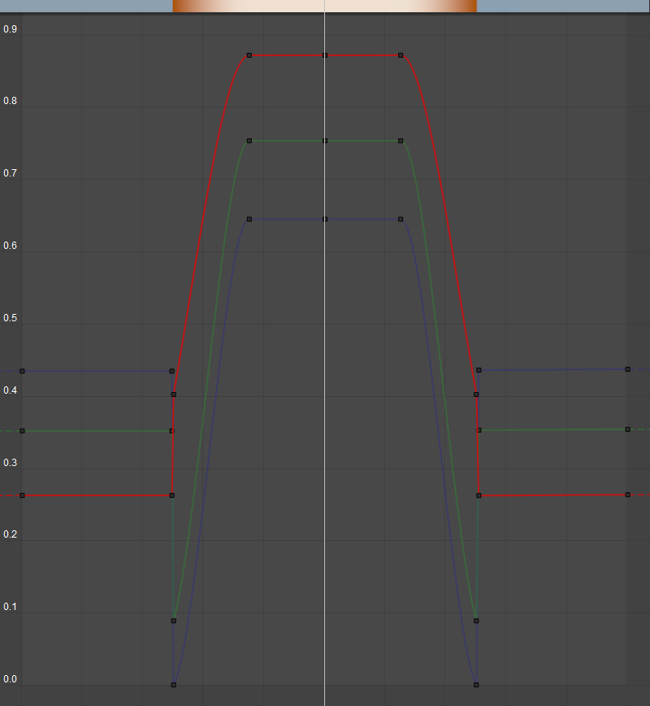
Рис. 4: Скриншот предварительного просмотра градиента цвета солнца и кривых.
Интенсивность солнца (люкс):
Это свойство контролирует освещенность солнца, и, как упоминалось ранее, важно, чтобы ее значение было близко к физическому значению. Быстрый поиск в Интернете дает среднее значение освещенности 100 000 люкс для яркого солнечного света.
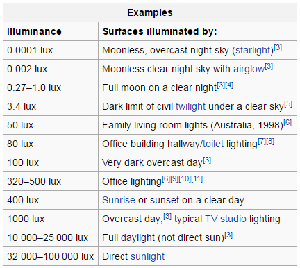
Рис5: Скриншот страницы Википедии, содержащей диаграмму значений освещенности.
Измените текущее время на 12:00 и создайте ключ со значением 120000. Причина, по которой это значение выше реальных значений, заключается в том, что часть света поглощается материалами, что дает им конечное значение люкса, которое значительно меньше, чем у источника. Мы вернемся к этому позже, когда настроим наш Sky Light.
Теперь, когда у нас есть основа для нашей интенсивности Солнца, мы можем продолжить и настроить остальные ключи для этого значения.
Интенсивность солнца уменьшается по мере приближения к горизонту, поэтому для этого нам нужно настроить еще несколько ключей. Измените время на 08:00 и установите интенсивность на 110000, сделайте то же самое на противоположной стороне в 16:00.
По мере приближения к закату/восходу солнца интенсивность падает очень низко. Теперь мы создадим ключ в 06:00 со значением 5 и отразим значение в 18:00.
Измерения в реальном мире показывают значения <1 люкс для лунного света. Это число слишком мало для того, чтобы движок мог точно отображать тени, исходящие от луны, поэтому мы будем придерживаться того же постоянного значения 5 для ночного времени. Для этого нам нужно настроить ключи на 00:00 и 23:59.
Убедитесь, что переходы между клавишами плавные, ваш градиент и кривые должны выглядеть следующим образом:
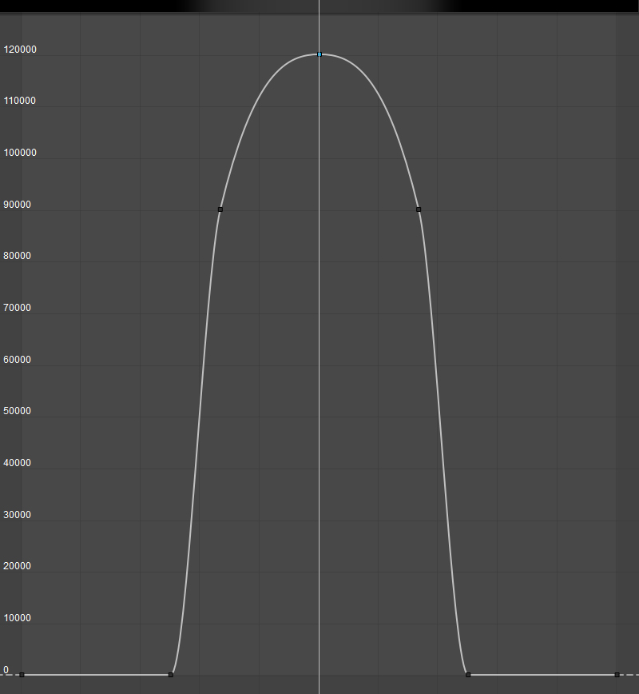
Рис.6: Скриншот предварительного просмотра градиента интенсивности солнца (люкс) и кривых.
Множитель солнечного блика:
Как вы могли догадаться, это контролирует зеркальный вклад солнечного света. Для любого реалистичного сценария освещения это значение всегда должно оставаться равным 1.
Небесный Свет
Вы, наверное, задаетесь вопросом, почему мы пропустили весь путь к небесному свету. Причина в том, что многие настройки в редакторе окружения влияют друг на друга. Хорошей практикой является определить настройки солнца/неба, прежде чем приступать к настройке тумана.
Параметры в этом разделе используются исключительно для расчета рассеяния солнечного света через атмосферу, эффективно управляя внешним видом солнечного диска, а также оттенком вашего неба. Они не влияют напрямую на рендеринг объектов в мире (например, на цвета и интенсивность освещения). Однако они влияют на общую освещенность вашей сцены за счет использования датчиков окружающей среды, как упоминалось ранее.
Множитель интенсивности солнца
Измените время на 12:00 и установите интенсивность на 50. В 05:45 и 18:15 уменьшите это значение до 1. Создайте еще два ключа в 00:00 и 23:59 и установите значение 0. Переход от 0 к 1 дает нам эффект осветления неба в районе, где солнце вот-вот зайдет.
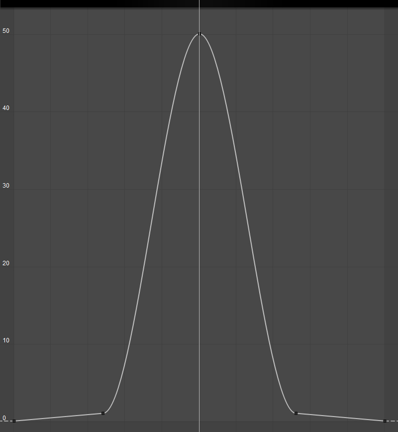
Рис7: Множитель интенсивности солнца настройка кривой
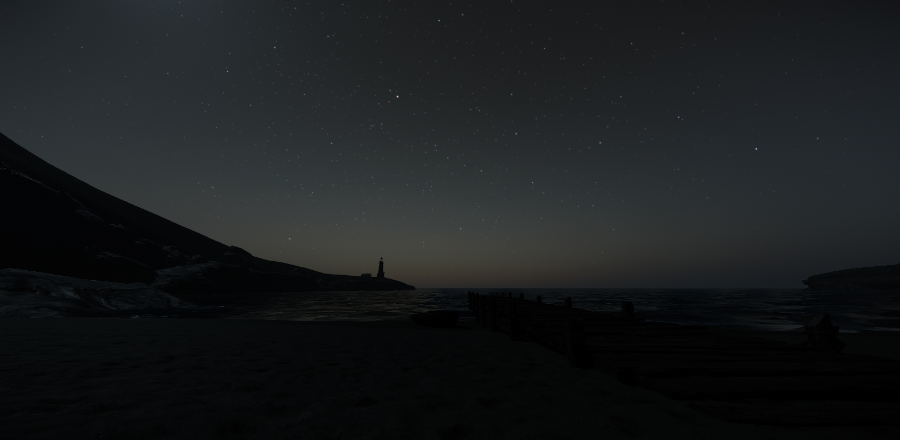
Рис8: Скриншот сделан в 05:30.
Обратите внимание на небольшое прояснение горизонта в том месте, где вот-вот взойдет солнце.
Чтобы получить точные показания освещенности на вашем уровне, вам необходимо измерить ее на поверхности, перпендикулярной солнцу. Для этой цели мы можем настроить пару плоскостей, и тогда все, что вам нужно сделать, это установить r_HDRdebug 1 в консоли и просто посмотрите на поверхность. Имейте в виду, что включение этого параметра делает всю сцену ярче, поэтому не забудьте выключить его, как только закончите измерение освещенности.
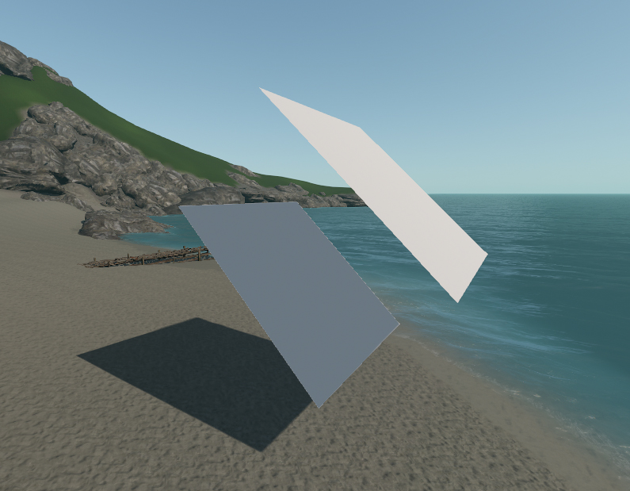
Рис.9: Плоскости, обращенные к солнцу, используются для измерения полной солнечной/теневой освещенности.
Глядя прямо на поверхность, мы получаем значение примерно 80 000 люкс. На данный момент единственным источником нашего освещения является солнечный свет, поэтому для его дальнейшего уточнения нам нужно будет включить в него и свет неба.
Для этого нам нужно будет настроить Environment Probe. Это позволяет эффективно управлять непрямым освещением, действуя как окружающее освещение, которое вы обычно получаете с неба. Мы не будем вдаваться в подробности о зондах окружающей среды (для этого посетите специальную страницу Зонды окружающей среды ) а пока иди к себе Создание объектов вкладка и ниже Разное есть объект зонда окружающей среды. Перетащите его в свою сцену, измените его размер, чтобы охватить всю местность, сделайте его активным и создайте кубическую карту. Имейте в виду, что любые изменения, которые вы вносите в свое время суток, потребуют повторной генерации кубической карты (рекомендуется делать это с выключенным объектом, чтобы он не получал никакой информации об освещении из ранее созданной кубической карты).
Сделав это, мы теперь получаем тени с синим оттенком, а не чисто черный, и наше значение люкс также подскочило примерно до 100 000, сохраняя при этом освещенность теней на уровне около 20 000. Соотношение 1/5 между полностью освещенными/затененными областями близко к реальным значениям.
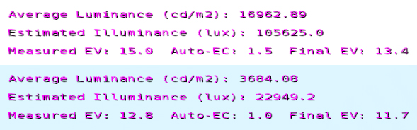
Рис. 10: Вверху — показания освещенности в полностью освещенной зоне, Внизу — показатели освещенности в затененной зоне.
Рэлеевское рассеяние
Это контролирует, насколько солнечный свет рассеивается атмосферой. Установите значение 1 для всей временной шкалы.
Длина волны (R/G/B)
Параметрами, которые управляют оттенком атмосферы, являются значения длины волны (R/G/B). Нам нужно установить их только один раз за весь цикл.
Взятые со страницы Википедии «Рассеянное излучение неба» (также известное как Skylight), мы установили эти значения на 650 (R), 550 (G), 450 (B).
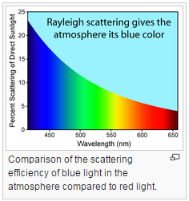
Рис 11: Скриншот со страницы Википедии с подробным описанием рассеянного неба.
Забегая вперед, важно отметить, что каждый из параметров, управляющих туманом, а также объемным туманом, влияет на общую освещенность вашей сцены.
Туман
Теперь, когда у нас есть плавный переход интенсивности света и цвета в течение дня, мы можем продолжить улучшать внешний вид неба в зависимости от времени суток. Для этого мы будем использовать туман.
Туман используется для увеличения глубины нашей сцены, а также отвечает за создание дымки на горизонте и свечения вокруг солнца.
Есть два разных компонента, которые способствуют образованию тумана:
- Первый — это вертикальный градиент тумана по всему уровню, для которого вы можете контролировать используемые цвета ( Цвет низ/верх параметры), интенсивность этих цветов ( Множитель нижнего/верхнего цвета ), а также начальную/конечную высоту ( Высота снизу/сверху ) и общая плотность ( Параметры плотности внизу/верху ). Все, что выходит за пределы указанной высоты, будет использовать определенный цвет, множитель и плотность для нижней и верхней части соответственно. Следует соблюдать осторожность перед использованием значений высокой плотности тумана, поскольку он может полностью override изменить цвет неба и кардинально изменить внешний вид вашего уровня. По сути, туман следует использовать для улучшения вашей сцены и добавления большего цвета в определенные сценарии, а не для полного контроля над внешним видом вашего неба. Имея это в виду, обратите внимание, что для верхней плотности можно установить более высокое значение, чем для нижней. Это эффективно компенсирует вертикальное падение и создаст густой туман в небе и четкий вид внизу, если такой результат желателен. У нас также есть возможность сместить переход между верхом и низом этого градиента, используя Смещение высоты цвета параметр.
- Второй компонент — это радиальный туман, который контролирует цветение вокруг Солнца. Это можно использовать для усиления таких эффектов, как яркие оранжевые цвета, которые вы ожидаете увидеть вокруг солнца на закате/восходе солнца. Мы можем указать для него цвет/множитель и контролировать размер свечения, перпендикулярного камере ( Радиальный размер ), а также размер по отношению к камере ( Радиальная доля ).
Внутри группы «Туман» также есть настройки, которые контролируют общее воздействие тумана на уровень. Зажим окончательной плотности Параметр контролирует максимальную плотность тумана. Эту функцию можно использовать в условиях сильного тумана, чтобы избежать полного исчезновения фона в тумане.
Глобальная плотность контролирует общую туманность сцены, поэтому она умножается на значения верхней/нижней плотности, а также на радиальный туман.
Здесь у нас также есть возможность убрать туман вокруг камеры и заставить его проявляться на указанном расстоянии. Этого можно добиться, используя Начало/конец/влияние линейного изменения параметры.
Наконец, у нас есть Теневое затемнение настройки, которые используются только для управления появлением тумана в теневых областях. Чтобы включить эффект этих значений, VolFogShadows необходимо включить на панели среды. Его не следует путать с Объемным туманом в Environment Editor, который имеет глобальное влияние.
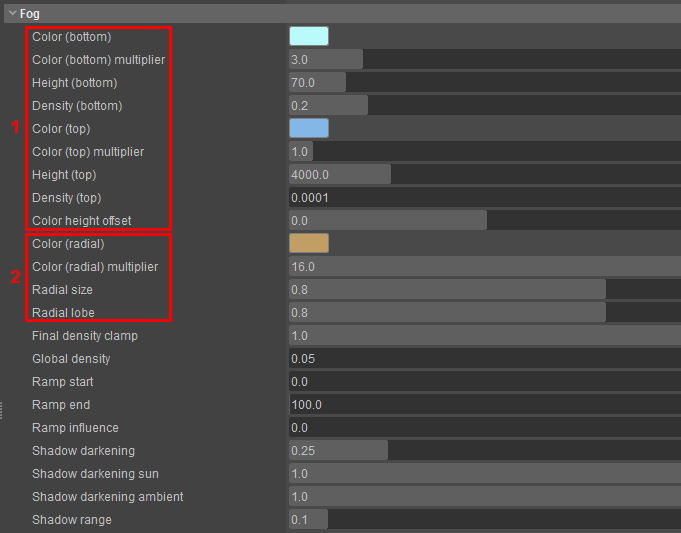
Рис12: Раздел параметров тумана внутри Environment Editor.
Теперь, когда мы лучше понимаем, что такое различные настройки контроля тумана, мы можем продолжить настройку цикла день-ночь.
Цвет (низ)
Начнем с установки текущего времени на 12:00 и назначения светло-голубого цвета ( 185, 251, 251 ). Это значение должно оставаться постоянным в течение дня и начнет исчезать почти до черного, как только мы приблизимся к закату/восходу солнца. Создайте еще две клавиши в 07:00 и 17:00 и назначьте тот же цвет. После того, как мы это сделали, создайте клавиши в 06:00 и 18:00 и назначьте им очень темно-серый цвет (13, 13, 13). Скопируйте одно и то же значение в 00:00 и 23:59, чтобы оно оставалось постоянным для ночного времени. Мы будем использовать это, чтобы создать иллюзию светового загрязнения на горизонте в ночное время.
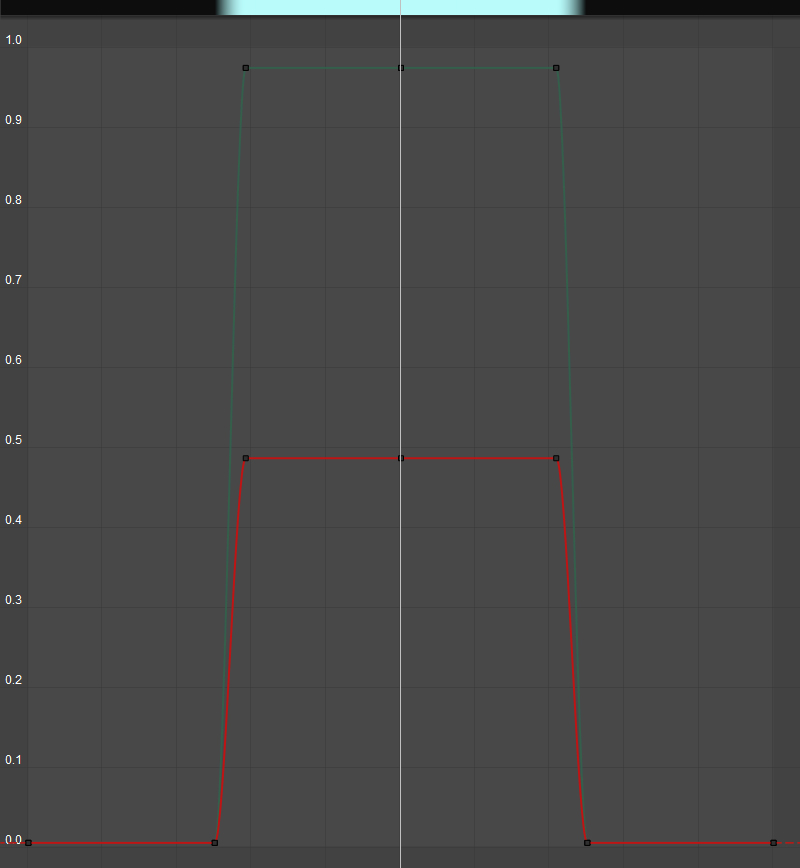
Рис.13: Настройка цветовых (внизу) кривых.
Множитель цвета (нижний)
Установите это значение на 3 для середины дня и постепенно снижайте его до 0,02 к сумеркам/рассвету. Причина этого в том, что по мере того, как солнце садится, нам нужно позволить проявиться радиальному цвету, чтобы он создал локализованное оранжевое свечение вокруг солнца. Итак, нам нужен ключ в 12:00 со значением 3 и еще 4 ключа в 00:00, 06:00, 18:00 и 23:59 со значением 0,02.
Если вам интересно, почему для ночного времени установлено такое низкое значение, то это связано с тем, как работает адаптация глаз, из-за которой туман становится слишком сильным в условиях низкой освещенности.
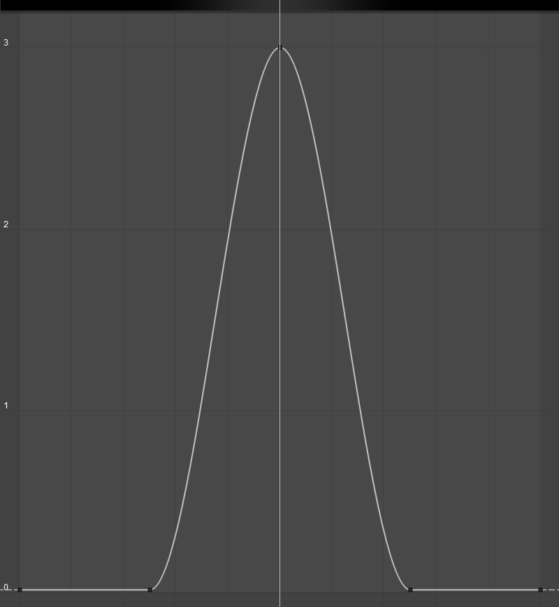
Рис. 14: Настройка кривых множителя цвета (внизу).
Высота (низ)
Нам нужно установить это значение только один раз для всей временной шкалы, поэтому давайте установим два ключа в 00:00 и 23:59 с одинаковым значением 70. Нам нужно это сделать только потому, что высота океана для нашего тестового уровня установлена на 70, и мы хотим, чтобы градиент начинался с этой высоты.
Плотность (низ)
Мы хотим, чтобы количество тумана увеличивалось на закате/восходе солнца. Для этого установите некоторые клавиши на 06:00, 07:00, 17:00 и 18:00 со значением 0,3, затем установите еще 3 ключа на 00:00, 12:00 и 23:59 со значением 0,2. Как всегда, убедитесь, что у вас плавный переход от одной тональности к другой, редактируя их касательные.
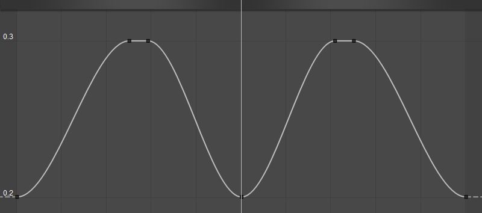
Рис.15: Плотность (внизу) настройка кривых
Цвет (верхний)
Это значение будет очень тонким, поскольку мы установим довольно низкую максимальную плотность. Для полудня назначьте светло-синий цвет, немного темнее нижнего, скажем, 131, 183, 231. В 07:00 и 17:00 измените значение на более темный синий, например 51, 72, 90. Поскольку мы будем использовать низкую плотность, этот цвет не будет иметь никакого влияния в ночное время. Я создал дополнительные ключи в 00:00, 06:00, 18:00 и 23:59 и установил черное значение, но это совершенно необязательно.
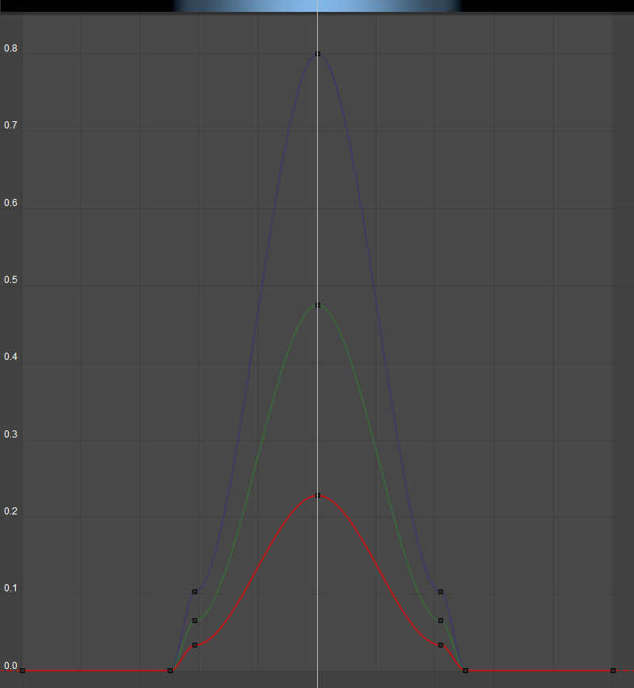
Рис.16: Настройка цветовых (вверху) кривых.
Множитель цвета (верхний)
Единственный ключ, который нам нужно создать для этого параметра, — это 12:00, поэтому измените текущее время соответствующим образом и установите значение 1. Установите для касательной значение auto, чтобы она постепенно переходила к 0 к концам временной шкалы.
Высота (верх)
Нам не нужно менять это значение для этого конкретного сценария.
Смещение высоты цвета
Как упоминалось ранее, это значение можно использовать для компенсации высоты перехода между верхним и нижним цветами, что необязательно для нашего уровня.
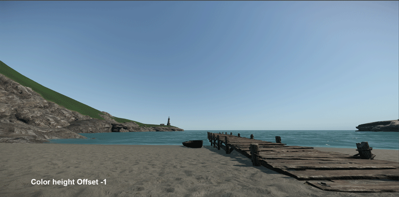
Рис.17: Эффект смещения высоты цвета.
Цвет (радиальный)
Между 08:00 и 16:00 установите для этого цвета светло-желтый цвет, например 193, 158, 100. По мере приближения к концу нашей временной шкалы он должен постепенно переходить в более темный оранжевый. Чтобы получить этот результат, установите две клавиши в 07:00 и 17:00, присвойте им темно-желтый цвет, например 192, 126, 49, а для времени 00:00 и 23:59 оставьте значение по умолчанию — черный. Если вы правильно настроили кривые, это должно дать вам оранжевый цвет, когда солнце находится прямо над горизонтом.
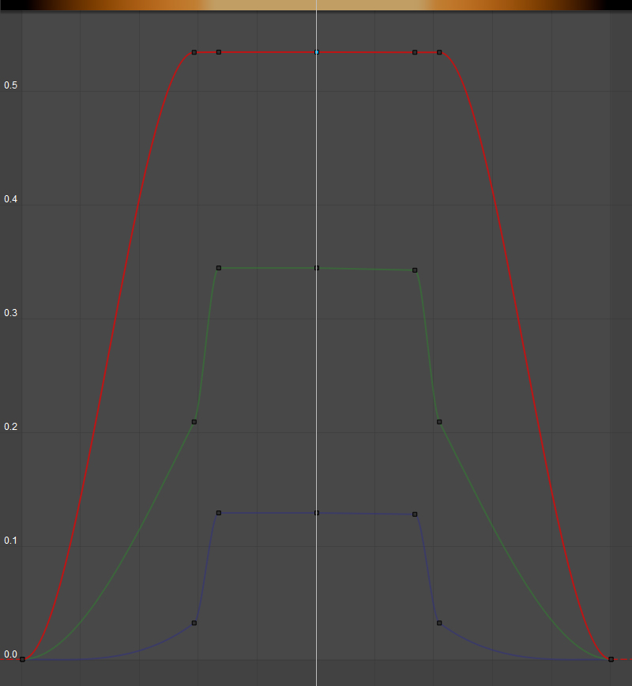
Рис18: Настройка цветовых (радиальных) кривых
Цветовой (радиальный) множитель
Для начала установите значение 16 для середины дня. Влияние радиального тумана становится более очевидным по мере того, как интенсивность света падает, поэтому нам придется уменьшать множитель по мере приближения к концу временной шкалы. Создайте два ключа в 07:00 и 17:00 и установите значение 10.
Вероятно, сейчас самое время упомянуть, что радиальный туман также применяется к луне в ночное время, поэтому, если мы оставим множитель равным 10, как только солнце уйдет за горизонт, мы получим огромное оранжевое свечение луны. Чтобы исправить это, создайте несколько ключей в 05:55 и 18:05 и установите значение 0. Это можно настроить для управления цветением луны, но есть специальный раздел для ночного неба. Мы рассмотрим это позже.
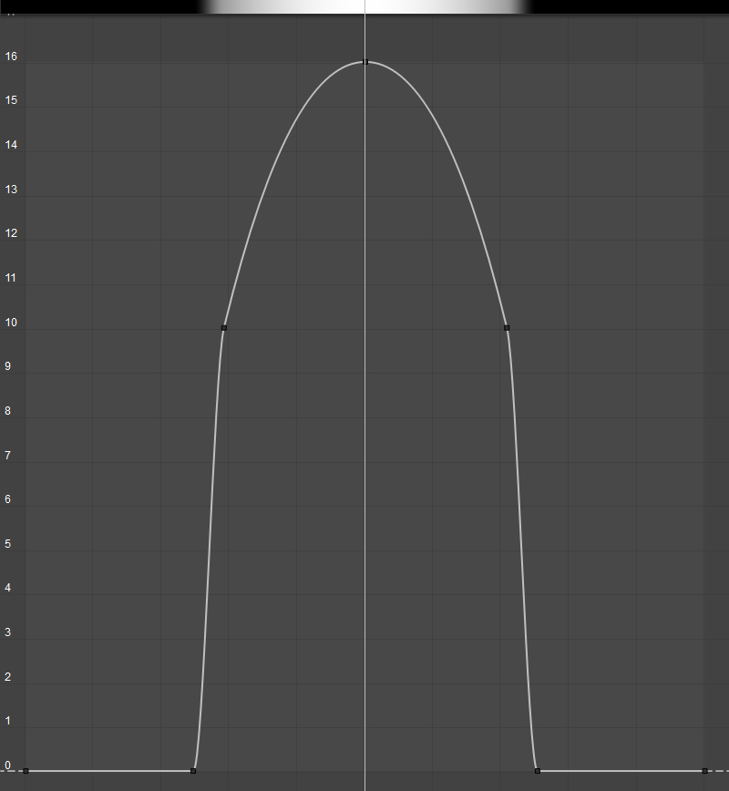
Рис19: Цветовой (радиальный) множитель настройка кривых
Радиальный размер
Нам нужно лишь немного изменить это, чтобы получить более выраженный эффект. Установите два ключа со значением 0,8 в 07:00 и 17:00.
Радиальная доля
Как и в случае с радиальным размером, установите значение 0,8 в 07:00 и 17:00 соответственно.
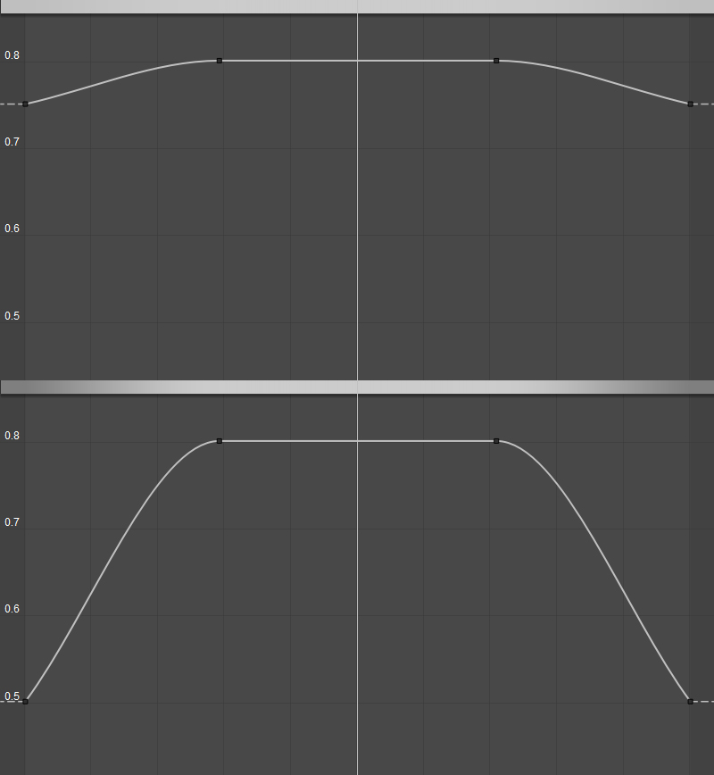
Рис. 20: Вверху: кривая радиального размера. Внизу: кривая радиального лепестка.
Глобальная плотность
Как упоминалось ранее, мы хотим, чтобы наш туман был плотнее утром/вечером и исчезал по мере того, как солнце поднималось выше в небе. Установите ключ на 12:00 и введите значение 0,05. Чтобы обеспечить плавный переход, добавьте еще несколько клавиш в 00:00, 06:00, 18:00 и 23:59 со значением 0,1.
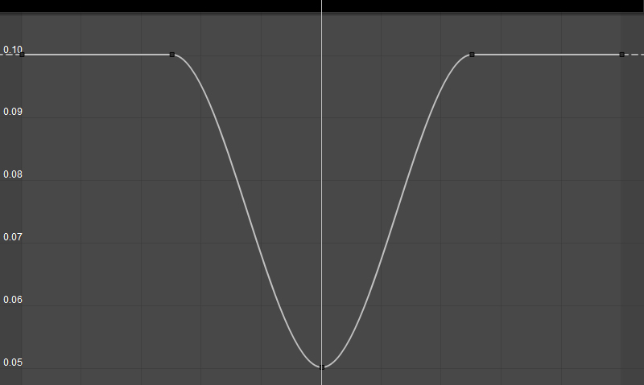
Рис.21: Глобальная плотность настройка кривой
Это все параметры, которые нам нужно изменить в разделе «Туман» для нашего цикла день-ночь. К этому моменту у вас должен быть полностью работающий переход от рассвета к закату.
Далее мы настроим значения для ночного времени, чтобы получить полный 24-часовой цикл.
Ночное небо
Подобно туману, ночное небо контролируется вертикальным градиентом путем указания нижнего цвета ( Горизонт ) и верхний ( Зенит ). Вы также можете контролировать смещение этого градиента, изменяя Зенитный сдвиг ценность.
Эта группа также содержит параметры, управляющие интенсивностью звезд ( Интенсивность звезды ), внешний вид луны, а также эффект свечения вокруг нее ( Цвет луны и Цвет и масштаб внутренней/внешней короны )
Мы будем устанавливать большинство этих значений только один раз для всей временной шкалы, поскольку луна не движется, поэтому нет необходимости в каких-либо переходах в ночное время.
Цвет горизонта
Давайте начнем с установки темно-синего цвета, например 20, 36, 51. Это поможет сделать эффект светового загрязнения более выраженным.
Зенит Цвет
Мы хотим, чтобы наше ночное небо постепенно становилось темнее к верху, поскольку меньше остаточного света может проникнуть в верхние слои атмосферы. Для этого установите цвет Зенита на чистый черный.
Зенитный сдвиг
Чтобы получить плавный переход между двумя цветами, установите значение 0,8. Это работает аналогично Смещение высоты цвета параметр для тумана.
Интенсивность звезды
Установите значение 0,01 для ночного времени с 00:00 до 06:00 и с 18:00 до 23:59 соответственно. Мы хотим, чтобы некоторые звезды тоже были видны некоторое время после того, как солнце поднялось над горизонтом. Для этого добавьте еще два ключа в 06:30 и 17:30 и установите значение 0,1.
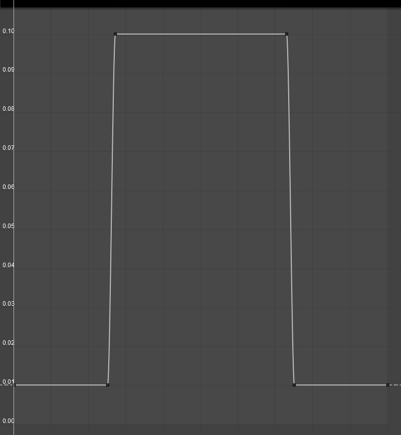
Рис.22: Настройка кривой интенсивности звезд.
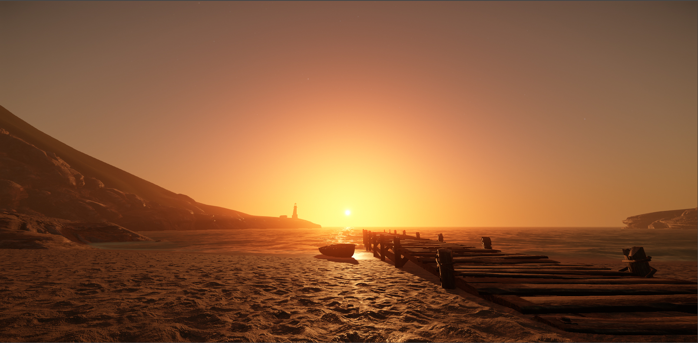
Рис. 23: Некоторые из самых ярких звезд все еще видны после восхода солнца.
Цвет луны
Этот параметр управляет излучающим цветом луны. Для ночного времени установите ненасыщенный синий цвет, например 51, 58, 65. Назначьте это значение для всей продолжительности ночи, создав соответствующие клавиши. В дневное время цвет изменится на светло-голубой, так как мы хотим, чтобы луна была видна большую часть дня. Создайте две клавиши в 07:00 и 17:00 и присвойте им цвет 200, 228, 255.
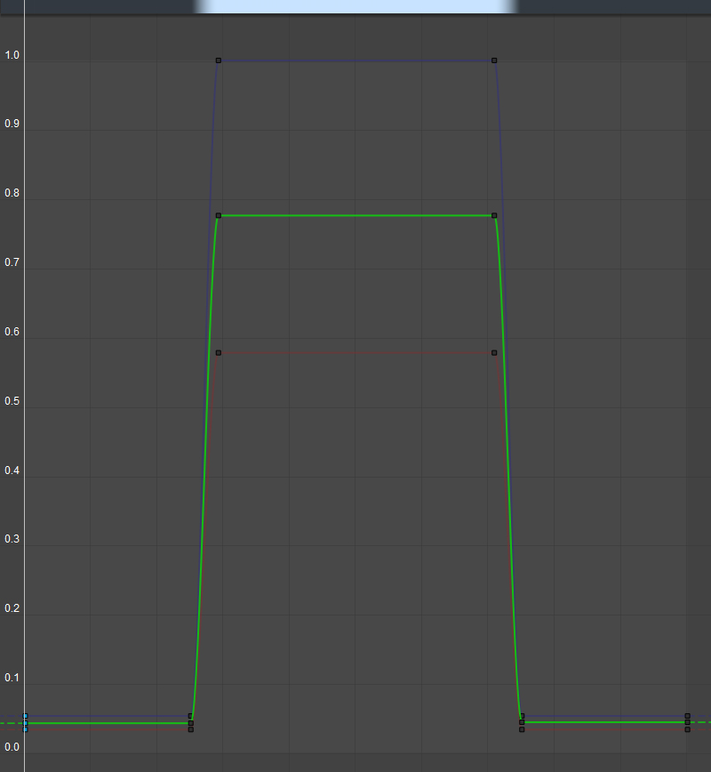
Рис24: Цвет луны. настройка кривой
Масштаб и цвет внутренней/внешней короны Луны
Как упоминалось ранее, эти параметры управляют свечением вокруг Луны. Нам нужно установить их только один раз для всей временной шкалы:
Внутренняя корона Луны – цвет 140, 160, 176.
Шкала внутренней короны Луны - 2
Внешняя корона Луны – цвет 34, 57, 70.
Шкала внешней короны Луны – 2
Множитель ночного неба
Этот раздел содержит параметры, управляющие интенсивностью цветов ночного неба. Их нужно настроить только один раз за весь цикл, и вот значения:
Цвет горизонта – 0,01
Зенитный цвет – 0,003 (обратите внимание, что, поскольку мы установили черный цвет, множитель не имеет никакого влияния)
Цвет луны — 0,1 — установка значения 0 полностью удаляет текстуру луны.
Цвет внутренней короны Луны – 0,01.
Цвет внешней короны Луны – 0,01.
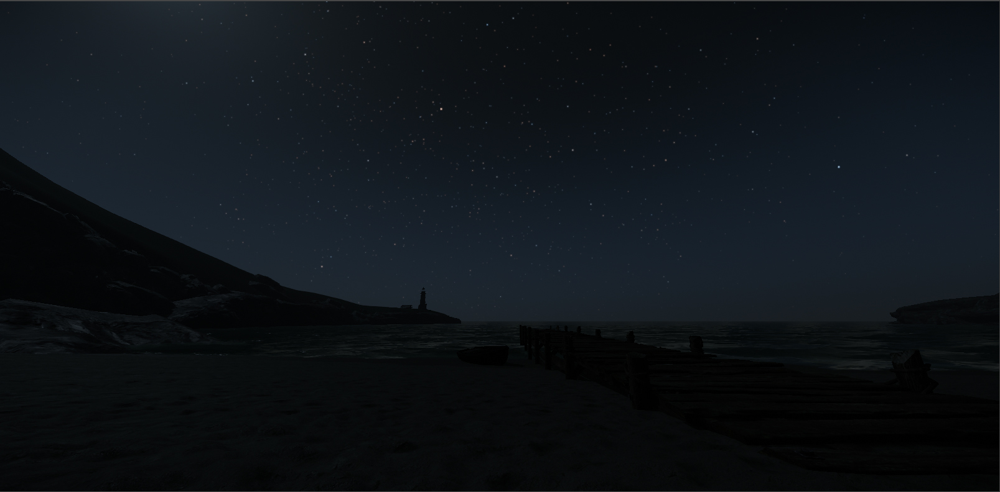
Рис25: Ночной скриншот готового результата.
Теперь, когда мы закончили настройку ночного неба, у нас есть полный цикл смены дня и ночи. Далее мы рассмотрим, как настроить это для работы с объемным туманом.
Объемный туман
Включение этого параметра полностью отменяет обычный туман и предлагает более качественное решение для тумана, предназначенное для правильного взаимодействия с другими объектами на вашем уровне. Как упоминалось в начале, это оказывает значительное влияние на производительность, поэтому его следует использовать с умом.
Чтобы включить его, используйте команду e_volumetricfog 1 в консоли. Чтобы гарантировать, что этот (и любой другой cVars) будет установлен правильно в игре и/или в редакторе, вам нужно либо использовать файлы конфигурации или добавьте их в свой файл .cryproject.
Хотя между обычным туманом и объемным туманом есть некоторые сходства, последний имеет уникальный набор параметров, которые лучше подходят для его функциональности.
Мы рассмотрим эти параметры, чтобы лучше понять, что они делают, однако нам нужно лишь настроить некоторые из них в соответствии с тем, чего мы пытаемся достичь.
Высота (низ)
Применяется та же логика, что и для обычного тумана: установите значение 70 для всей временной шкалы.
Плотность (низ)
Установите значение 0,5 в 00:00, 05:00, 12:00, 19:00 и 23:59 и добавьте еще два ключа в 06:15 и 17:45 со значением 0,8. Установка касательных для этих клавиш таким образом, чтобы между ними была плавная кривая, и туман будет постепенно усиливаться на закате/восходе солнца.
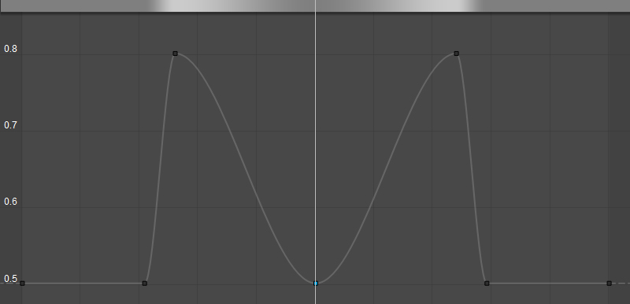
Рис.26: Плотность (внизу) настройка кривой
Высота/Плотность (вверху)
Оставьте для этих параметров значения по умолчанию.
Глобальная плотность
Как вы, наверное, догадались, это контролирует общую плотность объемного тумана. Установите значение 0,5 для 00:00, 05:00, 19:00, 23:59. Добавьте еще один ключ со значением 0,2 в 12:00.
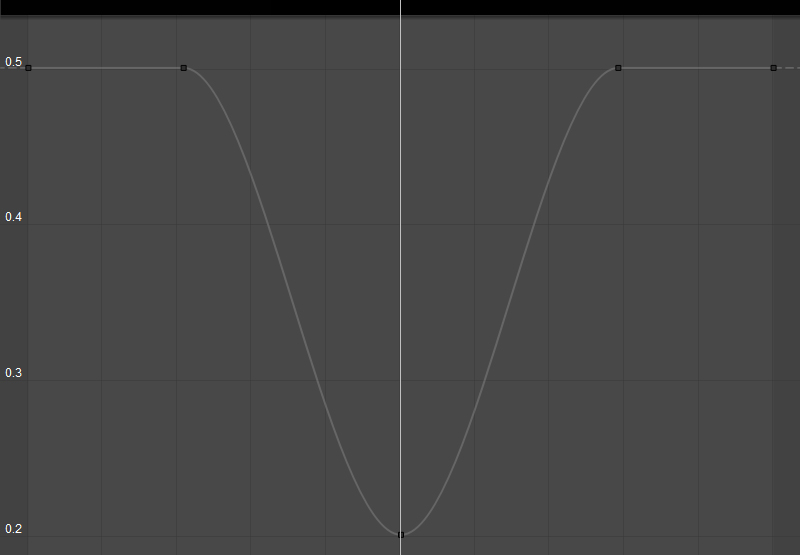
Рис27: Глобальная плотность настройка кривой
Начало/конец рампы
Они имеют ту же функциональность, что и соответствующие значения для обычного тумана. Для этого конкретного сценария никаких изменений не требуется.
Цвет (атмосфера)
Это контролирует общий цвет тумана в атмосфере. Установите светло-голубой цвет для полудня, например 140, 230, 255. По мере приближения к закату/восходу солнца он изменится на более темно-синий, например 90, 148, 164 (добавьте ключи в 06:00 и 18:00).
Для ночного времени установите этот цвет на чистый белый в 00:00, 05:55, 17:55 и 23:59. Как и обычный цвет нижней части тумана, он используется для создания эффекта светового загрязнения на горизонте.
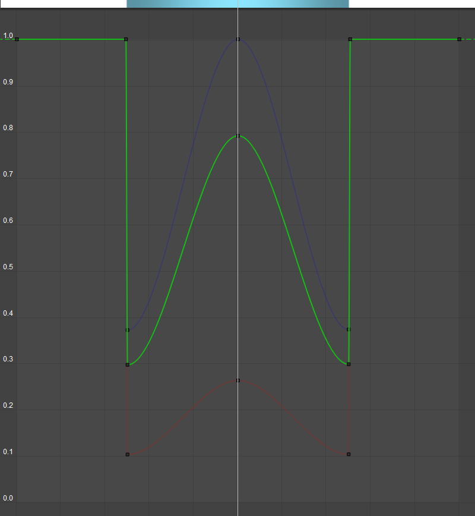
Рис28: Цвет (атмосфера) настройка кривой
Анизотропия (атмосфера)
Это значение можно определить только в диапазоне от -1 до 1, однако не следует использовать ни минимальные, ни максимальные значения, поскольку они создают артефакты. Значения ниже 0 сместят туман в направлении, противоположном солнцу, поэтому их использование не рекомендуется для реалистичных сценариев освещения. Положительное значение ближе к 0 обеспечивает более постоянный вид атмосферного тумана независимо от угла обзора по отношению к солнцу. Для нашей сцены подходит значение по умолчанию 0,2.
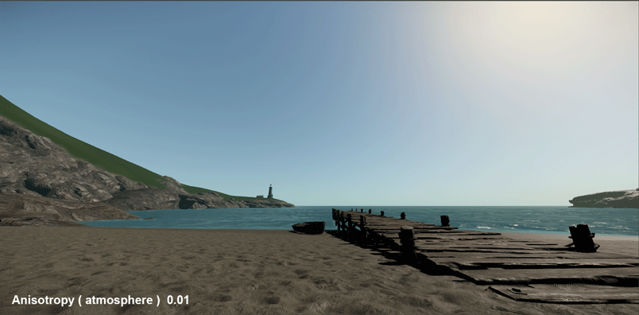
Рис29: Анизотропия (атмосфера) меняется от 0,01 до 0,99 с шагом 0,1.
Цвет (солнечный радиальный)
Подобно обычному радиальному цвету тумана, он используется для управления цветом свечения вокруг Солнца.
В 12:00 установите светло-желтый цвет (199, 183, 119). Измените его на оранжевый (184, 111, 64) на закате/восходе солнца. Эффект этого цвета распространяется и на луну в ночное время. Поскольку мы уже контролируем это через настройки ночного неба, нам придется изменить этот цвет на черный в ночное время, чтобы полностью убрать эффект. Добавьте несколько клавиш в 00:00, 05:55, 18:05 и 23:59 и назначьте им черный цвет.
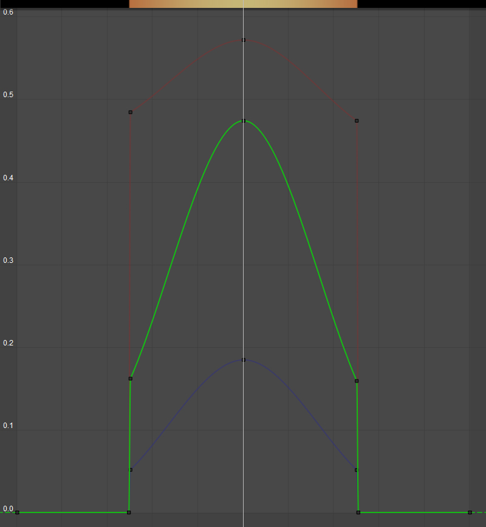
Рис30: Цвет (радиус солнца) настройка кривой
Анизотропия (солнечная радиальная)
Похоже на: Анизотропия (атмосфера) это значение определяет зависимость эффекта свечения от положения солнца. Установка этого положительного низкого значения делает радиальный цвет видимым даже при взгляде от солнца, а при использовании отрицательных чисел эффект будет постепенно смещаться на противоположную сторону солнца. Мы оставим значение по умолчанию 0,95.
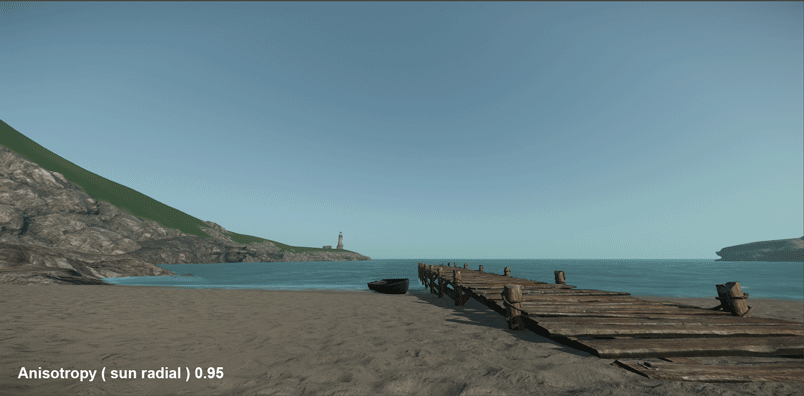
Рис31: Анизотропия (солнечный радиал) Диапазон 0,95–0,05
Солнце находится за камерой с правой стороны. Обратите внимание, как радиальный цвет переходит от локального эффекта к глобальному по мере уменьшения значения.
Коэффициент радиального смешивания
Этот параметр позволяет смешивать радиальный цвет солнца с цветом атмосферы, и для него можно установить только значения от 0 до 1. Установка значения 0 эффективно отключает радиальный туман. Мы оставим значение по умолчанию 1.
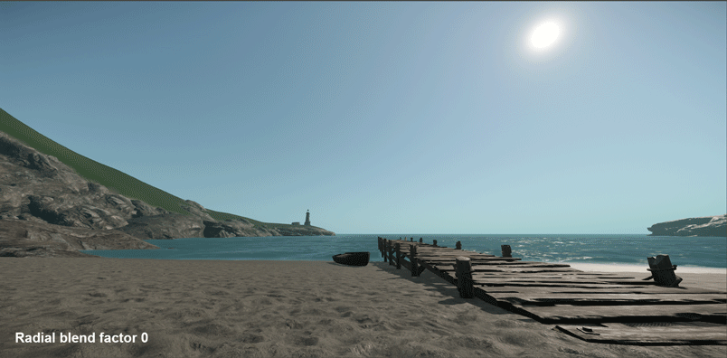
Рис.32: Влияние фактора радиального смешивания. установить на 0, 0,5 и 1
Радиальный режим наложения
Управляет методом смешивания атмосферного и радиального тумана.
Режим смешивания = 0, полностью аддитивное смешивание.
Режим наложения = 1 полностью линейная интерполяция
Мы будем использовать режим по умолчанию 0.
Цвет (объекты)
Его можно использовать для управления общим цветом тумана для объемных источников света, отличных от солнца, а также для объемов тумана.
Анизотропия (сущности)
Он определяет внешний вид объемных объектов тумана в зависимости от угла обзора по отношению к солнцу. Оставьте значение по умолчанию 0,6.
Диапазон
Есть два элемента, составляющих объемный туман в CRYENGINE:
- Лучевой объемный туман
- Аналитический объемный туман
Объемный туман с лучевым маршированием обрабатывает все типы света и туман различной плотности, а аналитический объемный туман обрабатывает солнечный свет без динамических теней и экспоненциальной плотности тумана по высоте.
Область рядом с камерой покрыта лучевым объемным туманом, а все остальное покрыто аналитическим объемным туманом.
Радиус этой области контролируется параметром Range. Мы установим значение 256 для всей временной шкалы.
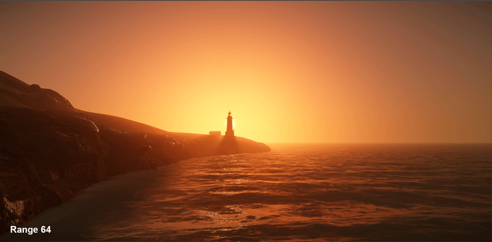
Рис33: Диапазон установлен на 64 и 256.
рассеяние
Он контролирует, насколько солнечный свет и любые другие источники света рассеиваются туманом. Более высокие значения сделают вашу сцену более туманной (даже если плотность тумана не изменится), и вы заметите увеличение размера и яркости эффектов свечения. Мы оставим значение по умолчанию 1.
Имейте в виду, что этот параметр оказывает большое влияние на общую освещенность сцены, поэтому его следует использовать с осторожностью.
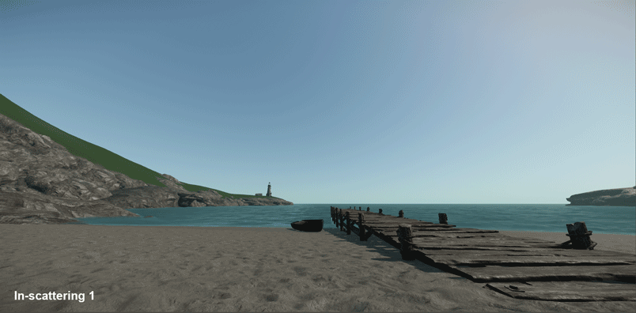
Рис34: Эффект различного рассеяния. ценности
Затемнение земли — побочный продукт адаптации глаз, пытающейся сбалансировать слишком яркое небо.
Вымирание
Это регулирует количество света, которое будет поглощать туман, что затрудняет проникновение солнечного света. Более высокие значения создадут эффект плотной атмосферы. Его можно было бы использовать для создания подводной сцены. Для нашей сцены мы установим значение 0,15 для всей временной шкалы.
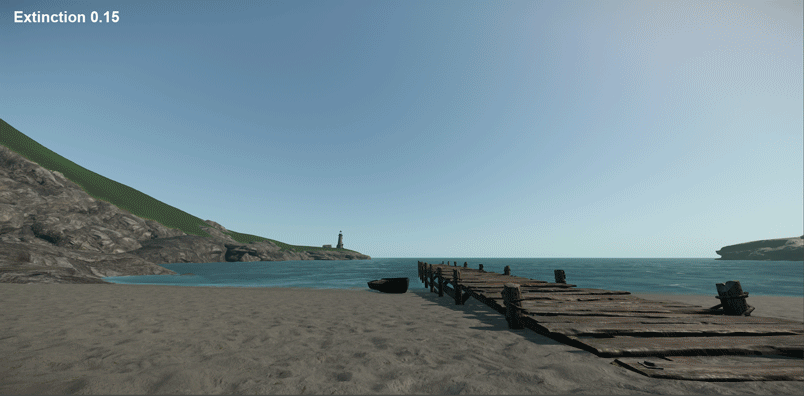
Рис.35: Различные значения вымирания, показывающие влияние, которое оно оказывает на солнечный свет.
Аналитическая видимость тумана
Это контролирует глобальную видимость аналитического тумана. Установите значение 0,8 для всей временной шкалы.
Окончательный зажим плотности
Аналогично соответствующей опции для обычного тумана, здесь контролируется максимальная плотность тумана, которой может достичь. Его можно использовать для возврата фоновых объектов в очень туманных сценариях.
Эффект солнечных лучей
В этом разделе собраны все параметры, управляющие эффектом солнечных лучей. Единственное, что мы будем менять для этого конкретного сценария, — это Ослабление солнечных лучей.
Видимость солнечных лучей
Это значение контролирует видимость солнечных лучей. Более высокие значения вызывают более яркие лучи вокруг Солнца.
Ослабление солнечных лучей
Это значение контролирует затухание солнечных лучей. Более высокие значения дают более короткие солнечные лучи. Установите значение 1,5 для всей временной шкалы.
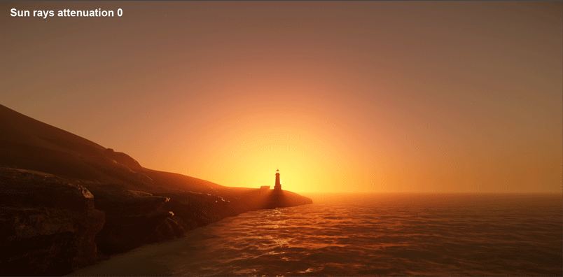
Рис.36: Влияние различных значений ослабления солнечных лучей.
Влияние солнечных лучей на цвет солнца
Это значение определяет, насколько цвет солнца влияет на цвет солнечных лучей. Если параметр установлен на 1.0, солнечные лучи приобретают цвет солнца. Если установлено значение 0,0, лучи используют собственный цвет. Значения между ними интерполируют между пользовательским и солнечным цветом.
Солнечные лучи нестандартного цвета
Это значение определяет пользовательский цвет, который будет использоваться солнечными лучами, если Влияние солнечных лучей на цвет солнца установлено значение больше 0.
Расширенный
В этом разделе собраны параметры, управляющие внешним видом океана. Мы будем корректировать Цвет океанского тумана чтобы отразить изменения в освещении с течением времени.
Цвет океанского тумана
Это значение эффективно управляет оттенком поверхности океана, а также цветом, используемым для создания эффекта тумана, когда камера находится под водой.
Установите синий цвет, например 36, 67, 77, между 08:00 и 16:00. по мере приближения к закату/восходу солнца он станет темно-синим. Установите еще два ключа со значением 25, 36, 46 на 06:00 и 18:00. Для ночного времени мы будем использовать темный ненасыщенный зеленый цвет, например 55, 68, 61, поэтому добавьте несколько ключей с этим значением в 00:00, 05:30, 18:30 и 23:59.
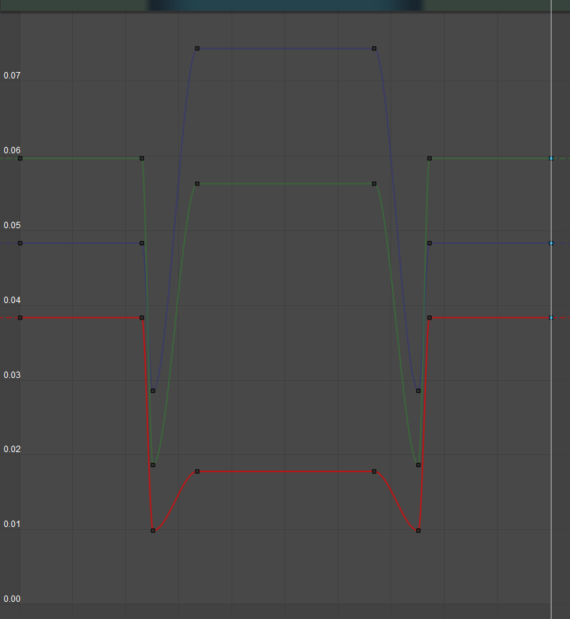
Рис37: Цвет океанского тумана настройка кривых
Множитель цвета океанского тумана
Это контролирует, сколько Цвет океанского тумана на самом деле используется шейдером океана. Установка значения 0 полностью удалила цвет.
Плотность океанского тумана
Это значение контролирует плотность океанского тумана.
Множитель скайбокса
Эффект этого параметра виден только при использовании неба static и контролирует яркость используемого скайбокса. Излишне говорить, что это не относится к нашей сцене.
Объемные облака
Процедурные объемные облака (r_volumetricClouds 1 в консоли) — хороший способ повысить свой уровень, но особенно хорош, если вы используете более быструю, чем обычно, скорость времени и дня в стиле замедленной съемки. Чтобы облака двигались быстрее, чем обычно, чтобы соответствовать скорости изменения времени суток, установите для параметра «Переменные» > «Объемные облака» > «Влияние ветра» значение, которое обеспечивает желаемую скорость движения облаков при текущей скорости ветра («Константы» > «Ветер» > «Вектор ветра»).
Делаем время суток динамичным
И последнее, но не менее важное: не забудьте использовать редактор кривых, чтобы установить для скорости воспроизведения ненулевое значение, и убедитесь, что ваше время начала равно 00:00, а время окончания — 23:59 для полного 24-часового цикла день/ночь (или более ограниченного диапазона времени, как вам нравится).
На этом этапе у вас должен быть настроен полный цикл день-ночь для работы как с объемным, так и со стандартным туманом. Надеемся, вы также лучше поймете, как работает Environment Editor, и сможете создавать свои собственные уникальные настройки освещения внутри CRYENGINE.